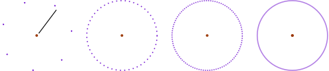
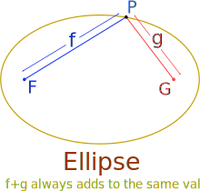

Set of All Points That ...
In Mathematics we often say "the set of all points that ... ".
What does it mean?
| A set is just a collection of things with some common property. | |
| When we collect ALL points that share a property we can end up with a line, a surface or other interesting thing. |
| Points can make a line |
Example: A Circle is:
"the set of all points on a plane that are a fixed distance from a central point".

So, just a few points start to look like a circle, but when we collect ALL the points we will actually have a circle.
Try drawing one yourself (move any point):
(Note: the points are drawn as dots so you can see them,
but they really should have no size at all)

Surface
Imagine this happening in 3D space: all the points that are a fixed distance from a center make a sphere!
Locus
The idea of "the set of all points that ..." is used so much it has a name: Locus.
A Locus is a set of points that share a property.
So, a circle is "the locus of points on a plane that are a fixed distance from the center".
Note: "Locus" usually means that the points make a continuous curve or surface.

Example: An ellipse is the locus of points whose distance from two fixed points add up to a constant.
So, no matter where we are on the ellipse, we can add up the distance to point "F" and to point "G" and it will always be the same result.
(The points "F" and "G" are called the foci of the ellipse)
The idea of "Locus" can be used to create some weird and wonderful shapes!